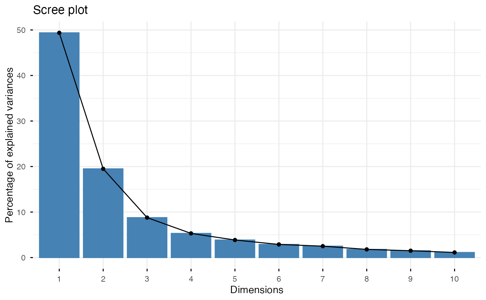
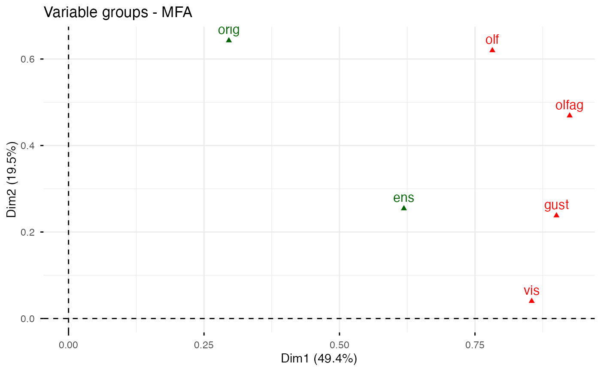
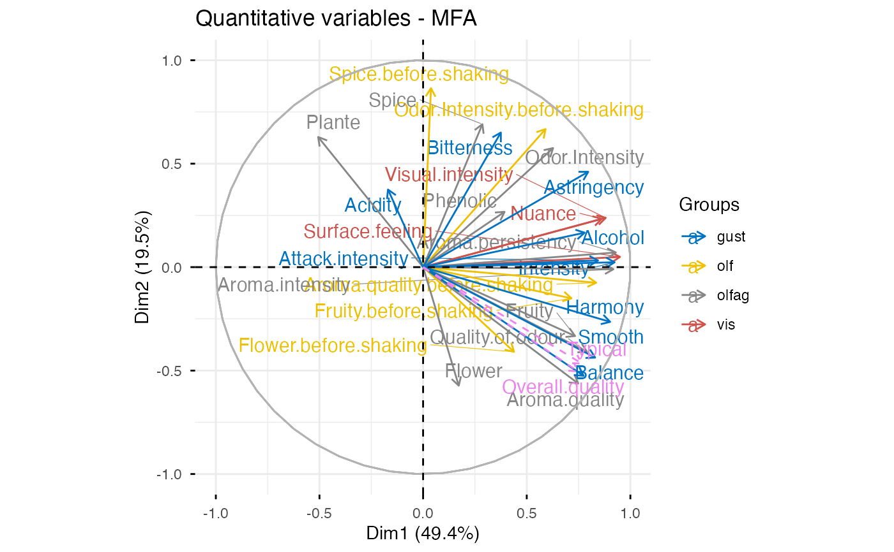
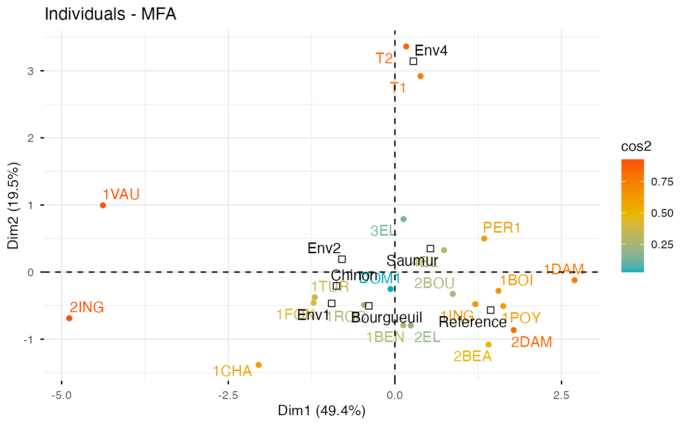
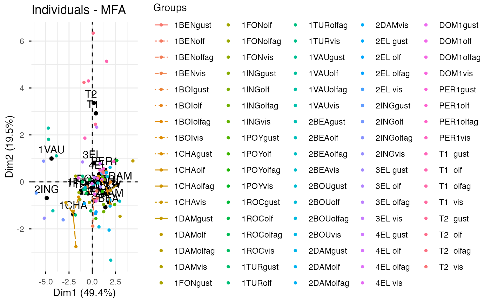
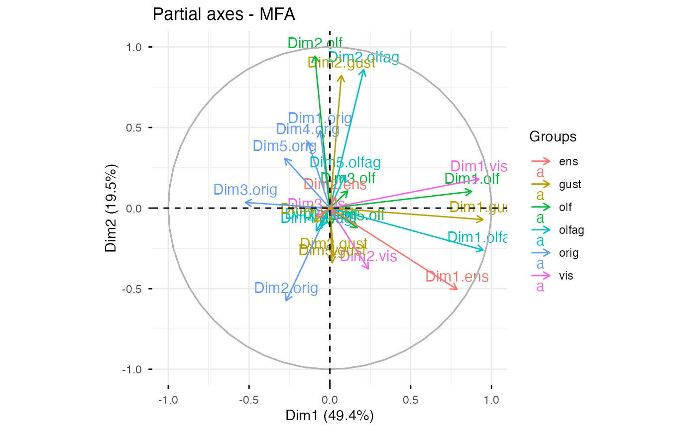
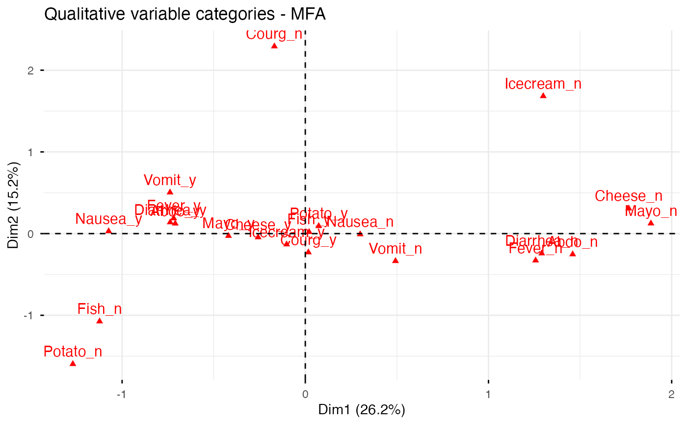
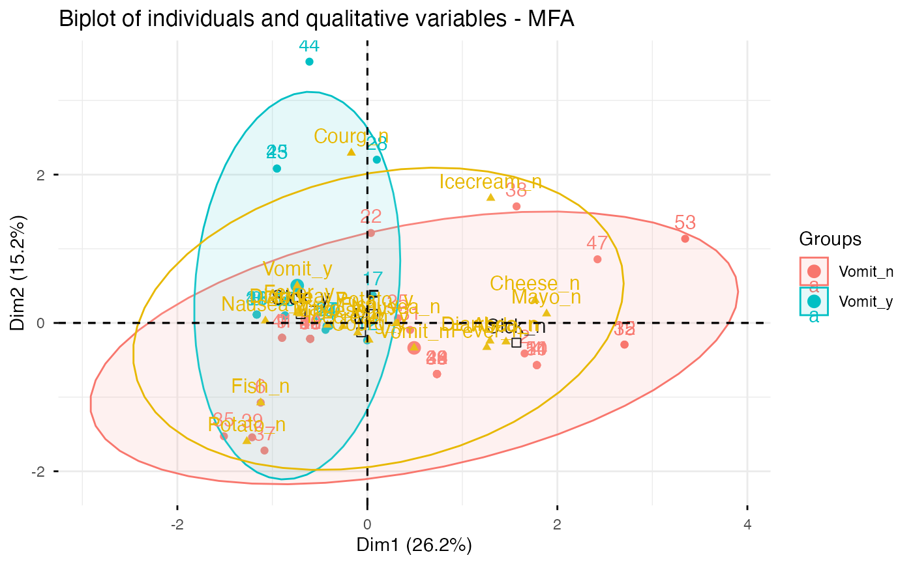

Multiple factor analysis (MFA) is used to analyze a data set in
which individuals are described by several sets of variables (quantitative
and/or qualitative) structured into groups. fviz_mfa() provides
ggplot2-based elegant visualization of MFA outputs from the R function: MFA
[FactoMineR].
fviz_mfa_ind(): Graph of individuals
fviz_mfa_var(): Graph of variables
fviz_mfa_axes(): Graph of partial axes
fviz_mfa(): An alias of fviz_mfa_ind(res.mfa, partial = "all")
fviz_mfa_quali_biplot(): Biplot of individuals and qualitative variables
fviz_mfa_ind(
X,
axes = c(1, 2),
geom = c("point", "text"),
repel = FALSE,
habillage = "none",
palette = NULL,
addEllipses = FALSE,
col.ind = "blue",
col.ind.sup = "darkblue",
alpha.ind = 1,
shape.ind = 19,
col.quali.var.sup = "black",
select.ind = list(name = NULL, cos2 = NULL, contrib = NULL),
partial = NULL,
col.partial = "group",
...
)
fviz_mfa_quali_biplot(
X,
axes = c(1, 2),
geom = c("point", "text"),
repel = repel,
title = "Biplot of individuals and qualitative variables - MFA",
...
)
fviz_mfa_var(
X,
choice = c("quanti.var", "group", "quali.var"),
axes = c(1, 2),
geom = c("point", "text"),
repel = FALSE,
habillage = "none",
col.var = "red",
alpha.var = 1,
shape.var = 17,
col.var.sup = "darkgreen",
palette = NULL,
select.var = list(name = NULL, cos2 = NULL, contrib = NULL),
...
)
fviz_mfa_axes(
X,
axes = c(1, 2),
geom = c("arrow", "text"),
col.axes = NULL,
alpha.axes = 1,
col.circle = "grey70",
select.axes = list(name = NULL, contrib = NULL),
repel = FALSE,
...
)
fviz_mfa(X, partial = "all", ...)an object of class MFA [FactoMineR].
a numeric vector of length 2 specifying the dimensions to be plotted.
a text specifying the geometry to be used for the graph. Allowed
values are the combination of c("point", "arrow", "text"). Use
"point" (to show only points); "text" to show only labels;
c("point", "text") or c("arrow", "text") to show arrows and
texts. Using c("arrow", "text") is sensible only for the graph of
variables.
a boolean, whether to use ggrepel to avoid overplotting text
labels or not. The old jitter argument is kept for backward
compatibility and is converted to repel = TRUE with a deprecation warning.
an optional factor variable for coloring the observations by groups. Default value is "none". If X is an MFA object from FactoMineR package, habillage can also specify the index of the factor variable in the data.
the color palette to be used for coloring or filling by groups. Allowed values include "grey" for grey color palettes; brewer palettes e.g. "RdBu", "Blues", ...; or custom color palette e.g. c("blue", "red"); and scientific journal palettes from ggsci R package, e.g.: "npg", "aaas", "lancet", "jco", "ucscgb", "uchicago", "simpsons" and "rickandmorty". Can be also a numeric vector of length(groups); in this case a basic color palette is created using the function palette.
logical value. If TRUE, draws ellipses around the individuals when habillage != "none".
color for individuals, variables and col.axes respectively. Can be a continuous variable or a factor variable. Possible values include also : "cos2", "contrib", "coord", "x" or "y". In this case, the colors for individuals/variables are automatically controlled by their qualities ("cos2"), contributions ("contrib"), coordinates (x^2 + y^2 , "coord"), x values("x") or y values("y"). To use automatic coloring (by cos2, contrib, ....), make sure that habillage ="none".
color for supplementary individuals
controls the transparency of individual, variable, group and axes colors, respectively. The value can variate from 0 (total transparency) to 1 (no transparency). Default value is 1. Possible values include also : "cos2", "contrib", "coord", "x" or "y". In this case, the transparency for individual/variable colors are automatically controlled by their qualities ("cos2"), contributions ("contrib"), coordinates (x^2 + y^2 , "coord"), x values("x") or y values("y"). To use this, make sure that habillage ="none".
point shapes of individuals, variables, groups and axes
color for supplementary qualitative variables. Default is "black".
a selection of individuals/partial individuals/ variables/groups/axes to be drawn. Allowed values are NULL or a list containing the arguments name, cos2 or contrib:
name is a character vector containing individuals/variables to be drawn
cos2 if cos2 is in [0, 1], ex: 0.6, then individuals/variables with a cos2 > 0.6 are drawn. if cos2 > 1, ex: 5, then the top 5 individuals/variables with the highest cos2 are drawn.
contrib if contrib > 1, ex: 5, then the top 5 individuals/variables with the highest cos2 are drawn
list of the individuals for which the partial points should be drawn. (by default, partial = NULL and no partial points are drawn). Use partial = "all" to visualize partial points for all individuals.
color for partial individuals. By default, points are colored according to the groups.
Arguments to be passed to the function fviz()
the title of the graph
the graph to plot. Allowed values include one of c("quanti.var", "quali.var", "group") for plotting quantitative variables, qualitative variables and group of variables, respectively.
color for supplementary variables.
a color for the correlation circle. Used only when X is a PCA output.
a ggplot2 plot
# Compute Multiple Factor Analysis
library("FactoMineR")
data(wine)
res.mfa <- MFA(wine, group=c(2,5,3,10,9,2), type=c("n",rep("s",5)),
ncp=5, name.group=c("orig","olf","vis","olfag","gust","ens"),
num.group.sup=c(1,6), graph=FALSE)
# Eigenvalues/variances of dimensions
fviz_screeplot(res.mfa)

# Group of variables
fviz_mfa_var(res.mfa, "group")

# Quantitative variables
fviz_mfa_var(res.mfa, "quanti.var", palette = "jco",
col.var.sup = "violet", repel = TRUE)

# Graph of individuals colored by cos2
fviz_mfa_ind(res.mfa, col.ind = "cos2",
gradient.cols = c("#00AFBB", "#E7B800", "#FC4E07"),
repel = TRUE)

# Partial individuals
fviz_mfa_ind(res.mfa, partial = "all")
#> Warning: This manual palette can handle a maximum of 13 values. You have supplied 84
#> Warning: Removed 71 rows containing missing values or values outside the scale range
#> (`geom_segment()`).

# Partial axes
fviz_mfa_axes(res.mfa)

# Graph of categorical variable categories
# ++++++++++++++++++++++++++++++++++++++++
data(poison)
res.mfa <- MFA(poison, group=c(2,2,5,6), type=c("s","n","n","n"),
name.group=c("desc","desc2","symptom","eat"),
num.group.sup=1:2, graph=FALSE)
# Plot of qualitative variables
fviz_mfa_var(res.mfa, "quali.var")

# Biplot of categorical variable categories and individuals
# +++++++++++++++++++++++++++++++++++++++++++++++++++++++++
# Use repel = TRUE to avoid overplotting
grp <- as.factor(poison[, "Vomiting"])
fviz_mfa_quali_biplot(res.mfa, repel = FALSE, col.var = "#E7B800",
habillage = grp, addEllipses = TRUE, ellipse.level = 0.95)
